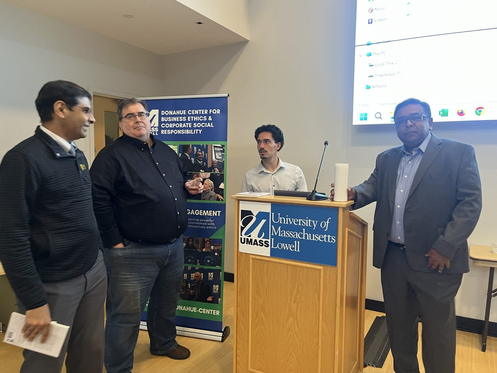

UMass Lowell.

My concentrations are Finance and Marketing, with a minor in Quantitative Economics. My GPA is 3.6 out of 4.0.
Relevant classes
- Financial Derivatives
- Financial Institutions and Markets
- Financial Statement Analysis
Credentials
- Capital Markets and Securities Analyst, CMSA
- Bloomberg Finance Fundamentals
- Spreadsheet Analysis